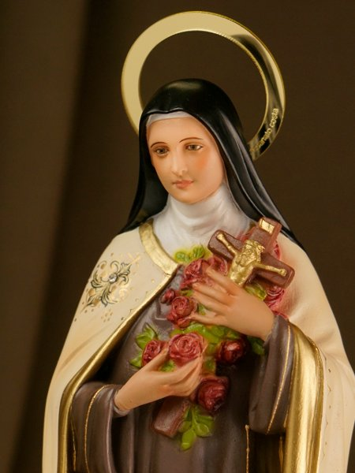
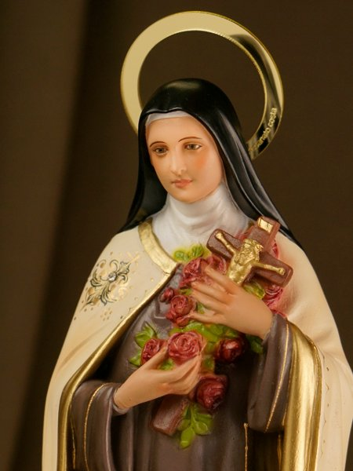

Bem-vindo ao Site de Santa Teresinha
Santa Teresinha do Menino Jesus, também conhecida como Santa Teresinha de Lisieux, é uma das santas mais queridas e populares da Igreja Católica.
Santa Teresinha do Menino Jesus, também conhecida como Santa Teresinha de Lisieux, é uma das santas mais queridas e populares da Igreja Católica.
